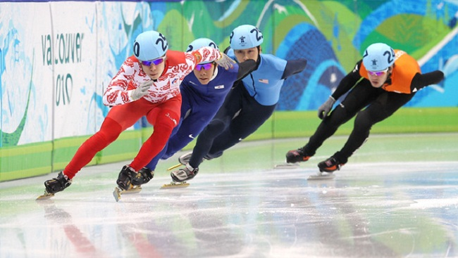
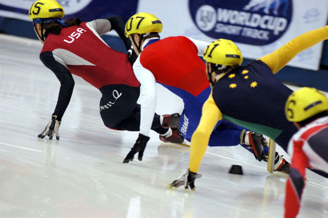
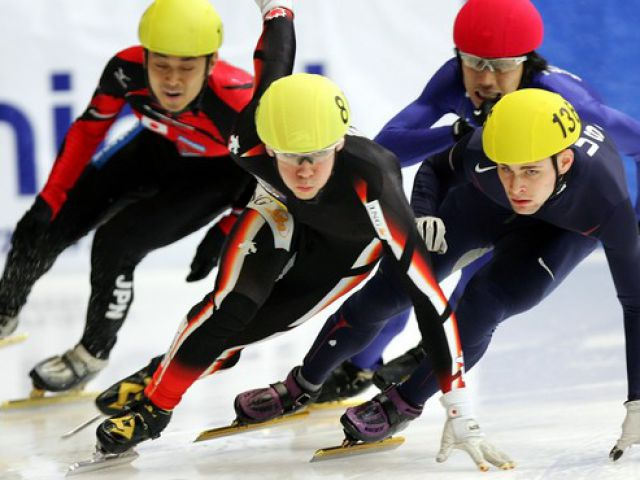
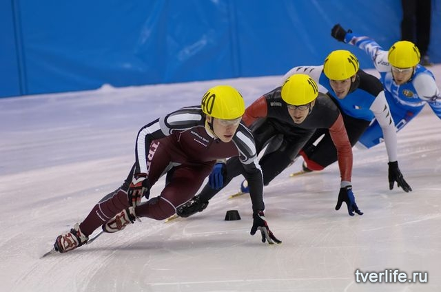
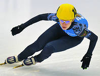

Шорт-трек
Зима – время льда. Редко, кто откажет себе в удовольствии морозным зимним вечером выбраться на каток и прокатиться несколько кругов по льду.
Многие знают, что бег на коньках – один из самых популярных видов спорта. А еще есть один его подвид, который менее популярен, но им, по сути, занимаются все те, кто приходит на каток – пусть даже они об этом и не подозревают. Речь о шорт-треке.
Конечно, суть его заключается совсем не в неспешном катании по кругу. Это крайне динамичный и быстрый вид спорта. Его участники порой развивают внушительные скорости ради победы.
По большому счету, шорт-трек – те же гонки на коньках, но на меньшей площади. Как правило, соревнования проходят на обычном хоккейном стадионе. Несмотря на то, что стандартная длина окружности трассы составляет 111,12 метров, спортсмены совершают забеги на гораздо более длинные дистанции: от 333 до 3000 метров. А когда проходят соревнования в мужской эстафете, то бегунам нужно осилить в общей сложности 5000 метров.
Шорт-трек – сравнительно молодой вид спорта. Впервые хоккейные «коробки» стали использоваться для конькобежных соревнований в начале ХХ века. Формирование и развитие шорт-трека происходило, как нетрудно догадаться, в США и в Канаде. А спустя несколько десятков лет этот вид спорта был признан самостоятельным и официальным: в 1967 году он был принят под эгиду Международного союза конькобежцев.
Минимальная толщина мата ограждения – 20 сантиметров и три миллиметра.
Поступательно развиваясь и приобретая популярность по всему миру, шорт-трек переживал расцвет во второй половине ХХ века. В 1981 году состоялся первый чемпионат мира по данному виду спорта. Европейского первенства в этом виде спорта, правда, пришлось ждать еще 16 лет.
За несколько десятков лет шорт-трек приобрел такую популярность, что в 1988 году был показательным видом спорта на Олимпиаде в Калгари. Оставался лишь один шаг, и он был сделан в 1992 году. В тот год шорт-трек официально был признан олимпийским видом спорта. С тех пор программа по шорт-треку является обязательной на каждой зимней Олимпиаде.
Нельзя сказать, что Россия является мировым лидером по шорт-треку. У нас в стране с достаточно холодными зимами он, как ни странно, не очень популярен. Тем не менее, в России он появился с 1985 года, когда наша команда принимала участие в Универсиаде в итальянском Беллуно. А спустя три года состоялся и первый чемпионат СССР. С тех пор прошло много времени, теперь лидеры мирового шорт-трека выйдут на сочинский лед для того, чтобы поспорить за звание олимпийского чемпиона. Верим в наших!
{kind=link}
{kind=link}
{kind=link}
{kind=link}
{kind=link}